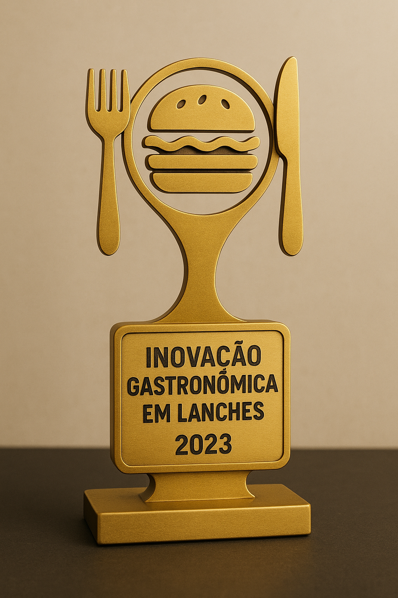

campanhas publicitarias
Prêmio “Melhor Hambúrguer da Cidade” (2022)
O Sabor Supremo ganhou esse prêmio depois de uma votação popular organizada por um guia gastronômico local. Clientes elogiaram especialmente o “Clássico Supremo” e o hambúrguer de bacon caramelizado, destacando sabor e suculência que superavam qualquer concorrente da cidade.
“Inovação Gastronômica em Lanches” (2023)
Durante uma feira de food trucks e lanches artesanais, o restaurante foi reconhecido por criar combinações inusitadas, como hambúrguer de frango com geleia de pimenta e pão brioche artesanal, mostrando criatividade e ousadia no segmento de fast food gourmet.

“Melhor Atendimento de Restaurante Rápido” (2021)
A equipe do Sabor Supremo foi premiada por seu atendimento caloroso e personalizado. Clientes mencionaram que a atenção aos detalhes, como lembrar nomes e preferências, fazia toda a diferença na experiência, tornando o restaurante acolhedor e familiar.
“Prêmio Nacional de Molhos Exclusivos” (2023)
O restaurante recebeu reconhecimento por seus molhos artesanais, que elevavam os lanches a outro nível. Um júri de chefs renomados destacou o molho de cheddar defumado e o barbecue com toque de café como criações que surpreendiam pelo sabor e originalidade.
“Escolha Popular , Melhor Lanche do Ano” (2024)
Em uma votação online nacional, o Sabor Supremo conquistou o título de lanche favorito do público. O diferencial foi a combinação de ingredientes frescos, receitas artesanais e apresentação caprichada, que conquistou tanto clientes fiéis quanto novos visitantes.
“Sustentabilidade e Ingredientes Locais” (2023)
O restaurante foi premiado por seu compromisso em trabalhar com fornecedores locais e priorizar ingredientes frescos e sustentáveis, mostrando que lanches saborosos também podem ser conscientes.
Todos os direitos reservados